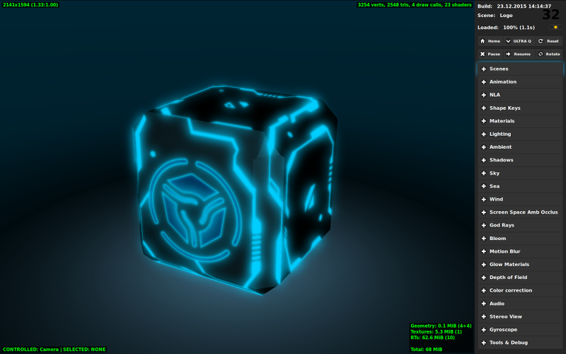
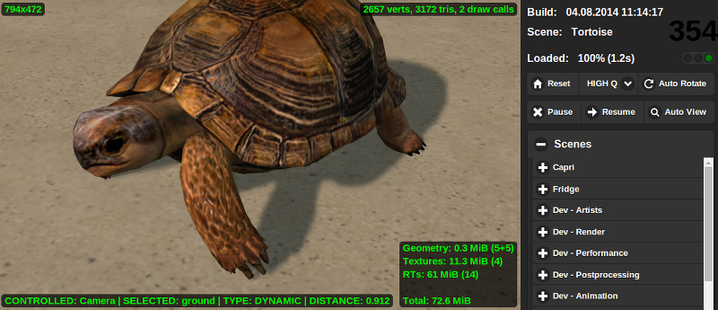

场景预览器¶
目录
侧面板¶
侧面板由三个区域组成：信息板，基本控制按钮和下拉面板与功能区分额外的控制元素列表。
控制元件列表中上到下依次
基本控制按钮¶
- 首页
用
Fast Preview按钮重载Blender导出的最新场景，或者，如果场景浏览器尚未从Blender运行，默认场景被加载。- 重置
此按钮删除上次查看场景的保存名称和重新加载页面回显示默认场景。
- LOW Q - HIGH Q - ULTRA Q
下拉菜单中选择了引擎的显示质量配置方式。
参见
- 暂停
暂停渲染。
- 恢复
恢复渲染。
- 旋转
启用和禁用相机围绕加载的场景。默认情况下禁用。
其他面板¶
工具和调试¶
此面板包含了一系列调试工具，其中包括：
- 概观外轮廓模式
- 自动浏览模式
按下这个按钮会导致场景查看器将
Scenes列表的每一个场景在一秒钟内加载。此功能可用于检查控制台错误所有可用的内容。- 画布分辨率因子
该参数可用于增加画布的分辨率。该值可以从1到10改变，默认值是1.0（画布分辨率等于场景查看器窗口的物理分辨率）。
注解
画布可用的最高分辨率可以通过Web浏览器来限制。
- 截屏
这个按钮可以用来把场景浏览器的窗口的屏幕截图。截图保存在Web浏览器用来存放下载的文件相同的文件夹。
- 调试视图模式
可用于调试目的不同的渲染模式的列表。可用模式包括：
NONE- 正常渲染模式。这是默认模式。不透明WIREFRAME- 将场景渲染成平白色带较深线框。用于渲染线框的颜色可以通过使用Wireframe Edge Color参数进行调整。透明WIREFRAME- 场景渲染为正常模式，但线框都在它的上面添加。像在前面的模式中，用于渲染线框的颜色可以通过使用Wireframe Edge Color参数进行调整。正面背面VIEW- 多边形的正面和背面渲染成不同颜色。BOUNDINGS- 这种模式增加了线框球来罩着 物体 和 网格 。球体可以是蓝色的（静态物体/目）或红色（动态物体）。CLUSTER VIEW- 在这个视图模式，每个物体在特定的集群中（用在 batching) 用特定的颜色渲染。BATCH VIEW- 在这种视图模式，每一批呈现视图使用一种特定的 （平） 颜色。在呈现时使用的颜色可以更改为随机生成的颜色，通过单击更改颜色按钮。RENDER TIME- 场景是场景的不同部分的复杂性用不同颜色来渲染。最轻的部分使用绿色，较重 - 橙色色调，场景中非常消耗资源的部分用红色。- 修改颜色
此按钮随机更改在
CLUSTER VIEW和BATCH VIEW模式中使用的颜色。在下列情况下此功能非常有用，当由引擎随机挑选的颜色太相似了，使它难以区分图像的部分。- 渲染时间阈值（毫秒）
此参数为
渲染TIME视图模式设定一个 “threshold” 。如果引擎在一定的物体比设置的这个值花费更多的时间渲染的时候，这个物体会被染成红色。默认值是1.5毫秒。- 线框边颜色
此参数允许你改变在
OPAQUE WIREFRAME和TRANSPARENT WIREFRAME视图模式下使用线框边的颜色。- HUD信息

此按钮显示渲染子场景及其参数的的列表，包含：
- SCENE
当前场景的名称。
- Active
显示子场景是否处于活动状态。
- Subscene
子场景的名称。
- Lamps
在子场景光源的数量。
- Size
渲染的子场景的大小。
- RenderCalls
在子场景中绘制的调用次数。
- Time
引擎花费在渲染子场景的时间量。
- TOTAL ACTIVE
所有子场景的绘制调用数和引擎花费在渲染它们的时间。
启用此参数可能会降低场景的性能。此选项默认为禁用。
- GL Debug
该参数，当被激活时，使引擎处理低级错误。这可以显著降低性能。当你打开场景浏览器的第一次时它被禁用，设置后，应用程序将保存此选项的状态供下一次使用。
- 最小功能模式
此参数使场景查看器运行加载场景就好像是在一个低端系统上运行（在移动设备上，例如）。这使得艺术家，可以找出哪些材质场景是在低端配置可能无法正常工作。默认情况下禁用。
动画¶
动画控件。当观看动画模型时可以：选择一个物体，并使用下拉菜单切换的动画，循环切换动画模式，停止播放动画，设置所需的帧（动画应该被停止）。
可用参数：
- Play All
按下此按钮将播放所有可用的动画。
- Stop All
按下此按钮将停止当前正在播放的所有动画。
- Object
场景中有动画的物体的列表。
- 动画槽
可用应用到物体上的动画的所有动画槽的列表。
- 动画
可供选择的物体使用的所有动画的列表。
- 循环
如果启用此参数，动画将重复播放。如果不是，动画将被播放一次后停止。默认情况下启用。
- Range
这个值示出了所选择的动画的长度。
- Status
这个值示出了动画的状态，即，是它正在播放或停止。
- Playing Animation > Play
播放选定的动画。
- Playing Animation > Stop
停止选定的动画。
- Set Frame
显示出了动画的当前帧和可用于设置当前帧。
- Skeletal Mix Factor
不同的骨骼动画混合在一起的因子。默认值是1.0。
NLA¶
控制非线性动画的工具（如果它存在于场景）。在这个面板中工作，NLA选项应该在场景的设置中启用。
可用参数：
- Range
显示的NLA带的开始和结束帧。
- Status
显示NLA动画的状态，即它正在播放或停止。
- Playing NLA > Play
此按钮可用于播放NLA动画。
- Playing NLA > Stop
这个按钮可以用来停止当前正在播放的NLA动画。
- Set Frame
如果动画在此刻被停止，该参数可用于设置NLA动画的特定帧。
Shape Keys¶
形变键控制。当查看的模型有形变键，您可以选择一个物体，物体上的形变键和键对物体的影响。
可用参数：
- Object
这个列表中包含场景中具有形变键的所有的物体。
- 形变关键帧
这个清单包含连接到一个选定的物体的所有形变键。
- 设置值
此参数设置的一个物体选定的形变键的影响程度。该值可以从零到1变化。
材质¶
材质属性设置。可以使用下拉菜单中选择一种材质。现在，这个功能只支持为数有限的属性和只有堆栈 （非节点） 材质应用于动态物体 （节点材质和静态物体不支持）。
可用参数：
- 材质
目前在一个场景中的所有堆材质的清单。
- Color
该参数定义一个选定的材质的基础的颜色。
- 反射率
该参数设定所选择的材质的反射率因子。它的值默认等于零。
- 菲涅尔
为反射菲涅耳效应的幕值。默认设置为零。
- 菲涅尔因子
菲尼尔l效果的一个因子。默认设置为零。
- 视差缩放
视差效果的缩放参数。这个值可以从零到0.1变化。默认值为0。
- 视差步幅
用于构建视差表面的步数。值可以从1至30变化，默认值是5。
光照¶
设置直接照明参数。可以使用下拉菜单中选择一种光源。支持更改颜色和强度。白天，太阳光照参数也可以在此面板上调整。

可用参数：
- 光源
这个列表包含当前场景中的所有光源。
- 类型
选择到的光源的类型。此参数不能在场景查看器来改变。
- Color
所选光源基准颜色。默认情况下，使用了白色 （1; 1; 1）。
- 粗能量
此参数设置为光源的能量值的整数部分。这个参数的值可以从零到100变化，默认值是1。
- 精确能量
此参数设置为光源的能量值的小数部分。该参数的值可从零到1变化。默认设置为零。
- 光能
此值的计算作为粗能量和精确能量参数的总和。如果他们都有默认值，它将会是等于 1。
- 聚光尺寸
由光源发射的光束的角度。默认值是75.此参数仅适用于
Spot型光源。- 聚光混合
这定义了聚光灯边缘的柔和度。默认值为 0.15。此参数也是只可供``Spot`` 类型的光源。
- 距离
此参数设置从其中由光源发出的光到只有由
Light Energy定义的一半明亮的值的距离（米）。默认设置为30。
以下参数仅适用于 Sun 式光源：

- 实时太阳运动>播放
按下此按钮激活实时太阳运动。
- 实时太阳运动>停止
按下此按钮停止实时太阳运动。
- 日期
此参数设置为当前日期。
- Time
此参数设置一天的当前时间。默认值为 12.0。
- 最大太阳垂直转角
此参数设置
Sun型光源的最大可能的垂直角度。默认值是60。- 时间倍数
此参数的值定义的时间流动的速度。默认值是 1.0 （时间以相同的速度，跟在现实生活中的流动相同）。
- 水平位置
在天穹中太阳的水平位置。默认值是29.82。
- 垂直位置
在天穹中太阳的垂直位置。默认值是34.82。

{kind=link}
{kind=link}
指标¶
{kind=link}
- 每秒计数帧
这是位于右上角。这显示最后1.5秒的平均和四舍五入的值。
- 视维
这是位于左上角。它显示像素视口的尺寸。
- 选定的物体和控制物体
位于左下角。它显示选择和控制物体的名称。物体选择可以用鼠标来执行。要直接控制的物体（通常为物理调试）按
Q键并单击物体。物体的移动通过W,A,S,D键执行。要退出控制模式下，按Q键并单击一个空白的地方。该标示也显示所选物体的距离用Blender单位（相当于米）。
- 场景复杂度指标
位于渲染区域的右上角。它显示顶点的数目，三角形，WEBGL绘制调用，并在主渲染场景中使用的着色器（ 阴影渲染调用不包括，例如）。
- 显存指标
位于渲染区域的右下角。它显示视频存储器的使用的几何形状，纹理，渲染目标的量，并且还总的内存使用情况。
- 场景负载误差指标
位于FPS 计数器下 。它显示在场景加载期间出现的错误和警告。红灯表示错误，黄色-警告和绿色表示场景已成功加载。
装载错误和警告可以在Web浏览器的控制台中查看。
- 背景透明度指标
位于屏幕的右上角，场景复杂度指标的右下面。这是一个调试工具，可用于以发现一个场景的背景是透明或没有。它显示为一个黑色和白色棋盘图案的小方块。
只有当该应用程序的背景为透明时这一指标是可见的。显示在上面的图片只给读者的总体思路，它将如何工作，要根据实际情况。